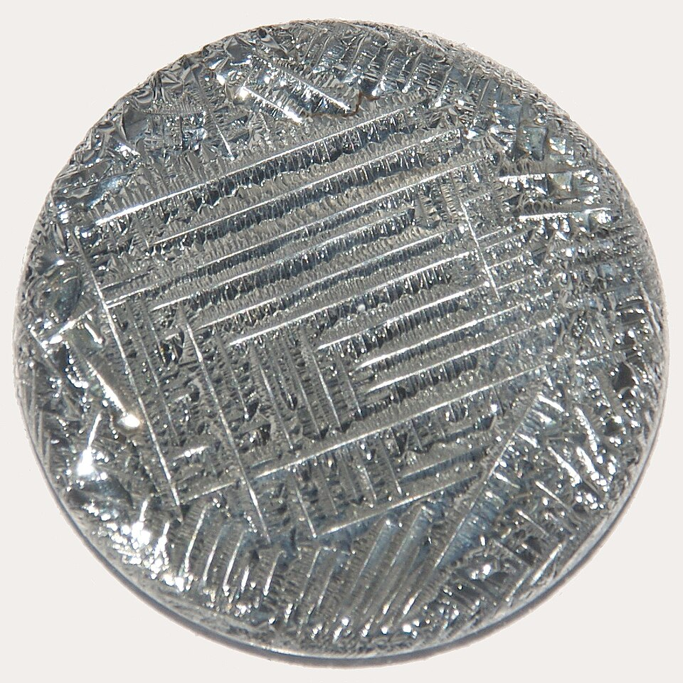

Telurio

El telurio es un elemento relativamente estable,
insoluble en agua y ácido clorhídrico, pero soluble en ácido nítrico y
en agua regia. Reacciona con un exceso de cloro para formar dicloruro de
teluro, TeCl2 y tetracloruro de teluro, TeCl4. Se oxida con ácido nítrico
y produce dióxido de teluro, TeO2, y con ácido crómico para dar ácido telúrico,
H2TeO4.